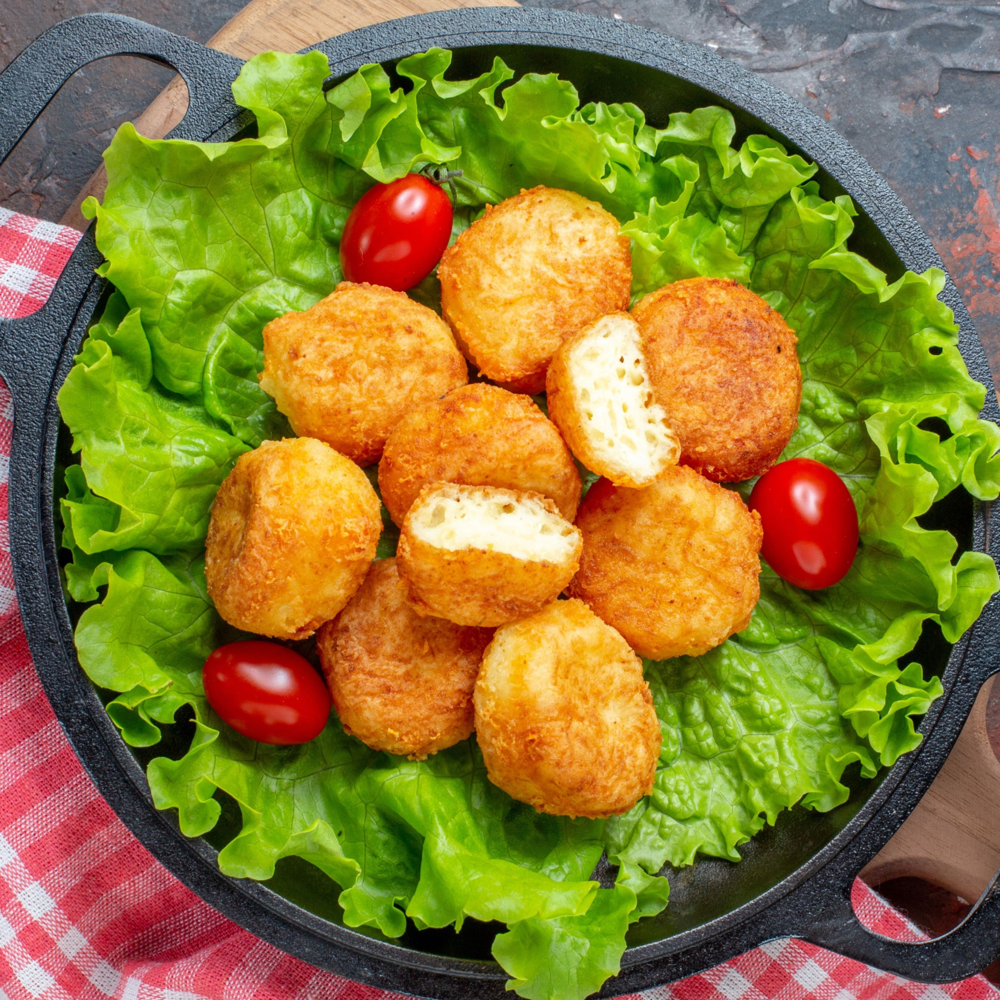

Acceuil
Nos recettes
Contactez-nous
Connexion
Vos recettes
Recette de Croquettes au pommes de terre

Ingredients
500 g de pommes de terre
60 g de parmesan râpé
Farine
Sel
12 billes de mozzarella
1 oeuf
Chapelure
Poivre
Matériel
Presse purée
Friteuse
Four
Méthode
1
Faites cuire les pommes de terre en robe des champs au four sur un lit de sel.
2
Coupez-les en deux et prélevez la pulpe.
3
Ecrasez-la en purée.
4
Ajoutez le parmesan râpé dans la purée de pommes de terre.
5
Salez et poivrez.
6
Mélangez bien.
La préparation doit être homogène.
7
Faites 12 portions avec la purée de pommes de terre.
8
Prenez une portion dans la paume de la main et aplatissez-la.
9
Placez au centre une bille de mozzarella.
10
Enfermez la bille avec la purée pour former une boule.
11
Faites chauffer l'huile de friture dans une friteuse à 160°C.
12
Dans une assiette mettez de la farine, dans une autre l'oeuf battu et dans une troisième la chapelure.
13
Passez chaque croquette formée alternativement dans la farine, l'oeuf et la chapelure.
14
Passez-les dans la friture 4 minutes.